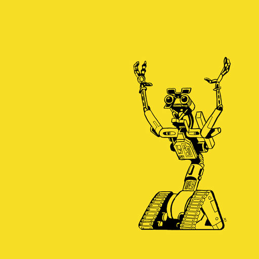

babbling with merfolk
- between the layers of JS hardware -
suz hinton
@noopkat
NYC
front-end dev @ kickstarter
i like javascript
i like robotics
yep
micro-controllers


how
arduino uno
johnny-five
⚠︎ WARNING ⚠︎
✖︎ how to get started ✖︎
☛ johnny-five.io
✧ abstraction ✧
why?
taking a peek underneath
let's begin
hello world

hello world
- var five = require("johnny-five");
- var board = new five.Board();
- board.on("ready", function() {
- var led = new five.Led(13);
- led.blink(500);
- });
var five = require("johnny-five");
var board = new five.Board();
board.on("ready", function() {
var led = new five.Led(13);
led.blink(500);
});hello world
- var five = require("johnny-five");
- var board = new five.Board();
- board.on("ready", function() {
- var led = new five.Led(13);
- led.blink(500); // <= ??
- });
var five = require("johnny-five");
var board = new five.Board();
board.on("ready", function() {
var led = new five.Led(13);
led.blink(500); // <= ??
});deeper
- setInterval(function() {
- this.toggle();
- }.bind(this), rate);
setInterval(function() {
this.toggle();
}.bind(this), rate);deeper
- setInterval(function() {
- this.toggle(); // <= ??
- }.bind(this), rate);
setInterval(function() {
this.toggle(); // <= ??
}.bind(this), rate);deeper again
- // turn on
- this.value = 255;
- this.write();
- // turn off
- this.value = 0;
- this.write();
// turn on
this.value = 255;
this.write();
// turn on
this.value = 0;
this.write();
deeper again
- // turn on
- this.value = 255; // <= brightness
- this.write();
- // turn off
- this.value = 0 // <= brightness;
- this.write();
// turn on
this.value = 255; // <= brightness
this.write();
// turn on
this.value = 0; // <= brightness
this.write();
deeper again
- // turn on
- this.value = 255;
- this.write(); // <= ??
- // turn off
- this.value = 0;
- this.write(); // <= ??
// turn on
this.value = 255;
this.write(); // <= ??
// turn on
this.value = 0;
this.write(); // <= ??
placeholder for computer and arduino chatting picture
Down at the atMega328 building
Registers = 'offices'
3 different office types
DDR, PIN, and PORT
Down at the atMega328 building
4 of each office
PORTA, PORTB, PORTC, PORTD
each physical pin has a bit in one of each office type
Each office stores 1 byte!
DDR - input or output?
PIN - read a value from a pin
PORT - write a value to a pin
placeholder for cat office/switchboard sequence
- DDR
- PIN
- PORT
- Arduino core lib
- switchboard